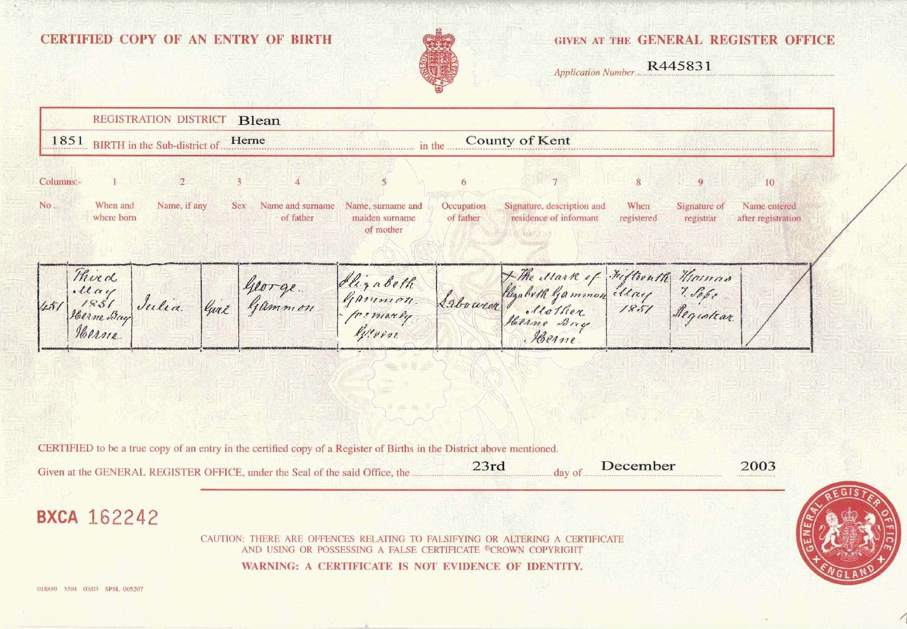
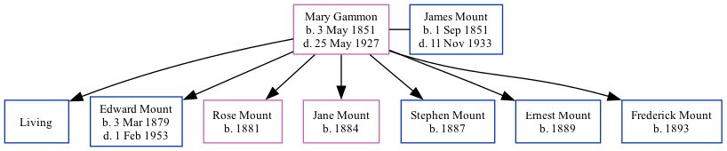

Mary Julia Mount (née Gammon) 1851 - 1927
[ Home ] | [ Calendar ] | [ Surnames Index ] | [ Family History ], Mary Gammon, the wife of James Mount (the first cousin four-times-removed on the mother's side of Nigel Horne), was born in Herne Bay, Kent, England on May 3, 18511 and married James (a stoker at gasworks with whom she had 7 children: Harry, Edward Thomas, Rose E, Jane, Stephen, Ernest and Frederick, along with 1 surviving child) at Christ Church in Herne Bay on Apr 30, 18762.
Mary spent all of her life in Kent, England. Throughout her life, she lived in several places around the county: at 7 Salts Lane in Herne Bay on Apr 3, 18813; at 24 King Street in Herne Bay on Apr 5, 18911; and at 49 King Street in Herne Bay on Mar 31, 19014 and on Apr 2, 19115.
She died on May 25, 1927 in Herne Bay.
Children
- Edward Thomas was born on Mar 3, 1879
- Rose E was born in 1881
- Jane was born in 1884
- Stephen was born in 1887
- Ernest was born in 1889
- Frederick was born in 1893
Citations
- 1891 England, Wales & Scotland Census - Findmypast (was age 38 and the wife of the head of the household)
- Kent, Canterbury Archdeaconry Marriages - Findmypast
- 1881 England, Wales & Scotland Census - Findmypast (was age 29 and the wife of the head of the household)
- 1901 England, Wales & Scotland Census - Findmypast (was age 48 and the wife of the head of the household)
- 1911 Census for England & Wales - Findmypast (was age 56 and the wife of the head of the household)
Media
Mary Julia Gammon - Birth Certificate

Kent, Canterbury Archdeaconry marriages - GBPRS/CANT/M/97073915/2
England & Wales marriages 1837-2005 - BMD/M/1876/2/AZ/000102/273
1901 England, Wales & Scotland Census - GBC/1901/0006244915
1911 Census for England & Wales - GBC/1911/RG14/04354/0131/2
Family Tree
Generated by Ged2Site. Last updated on Jul 20, 2025